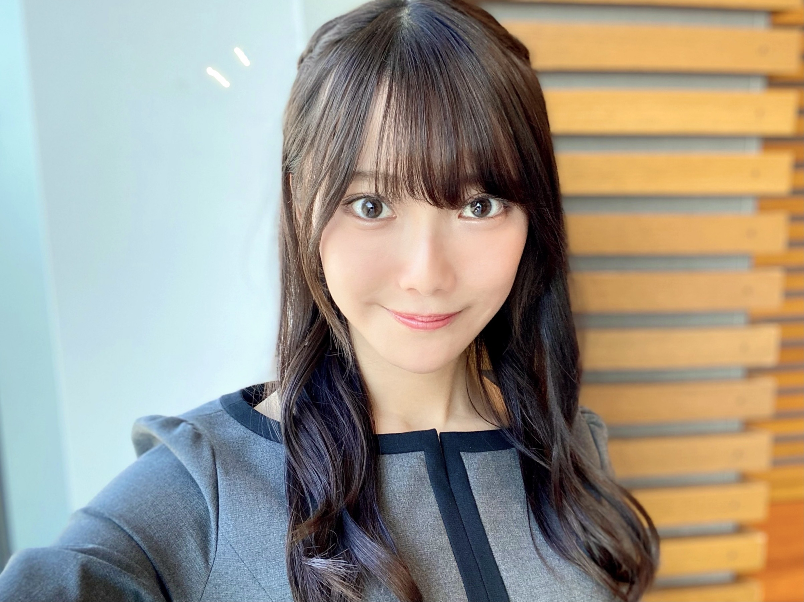
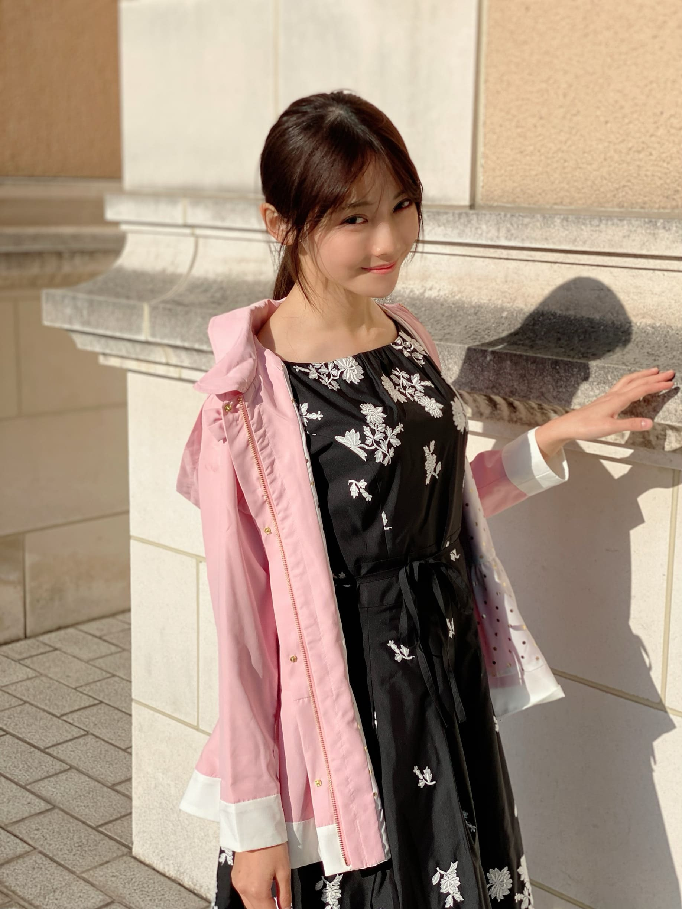
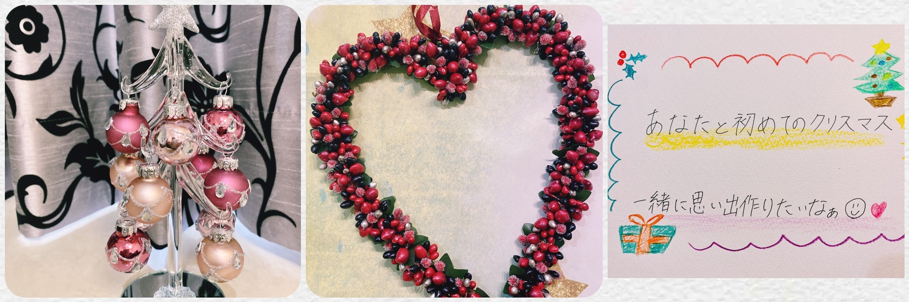
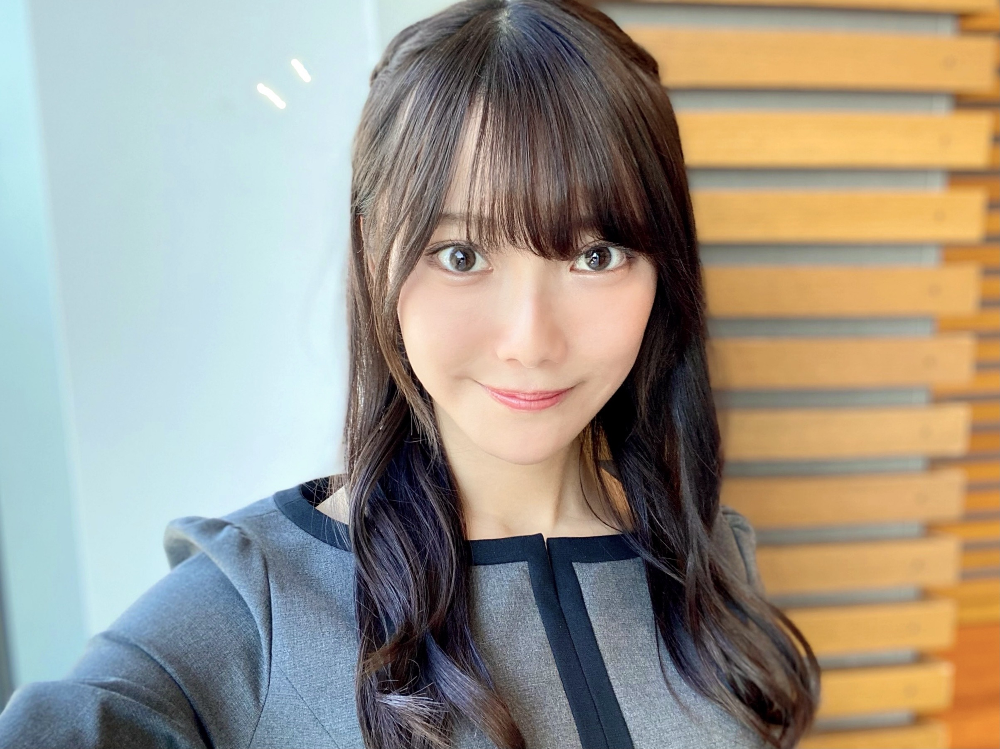
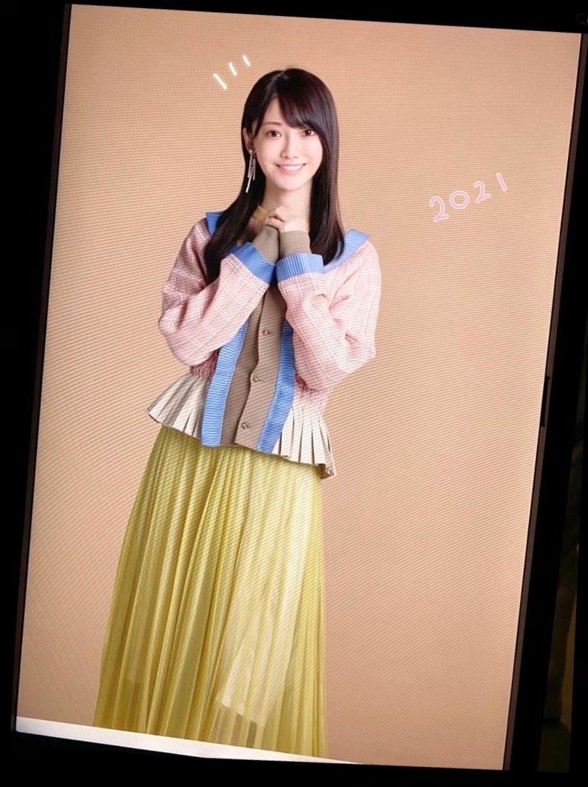
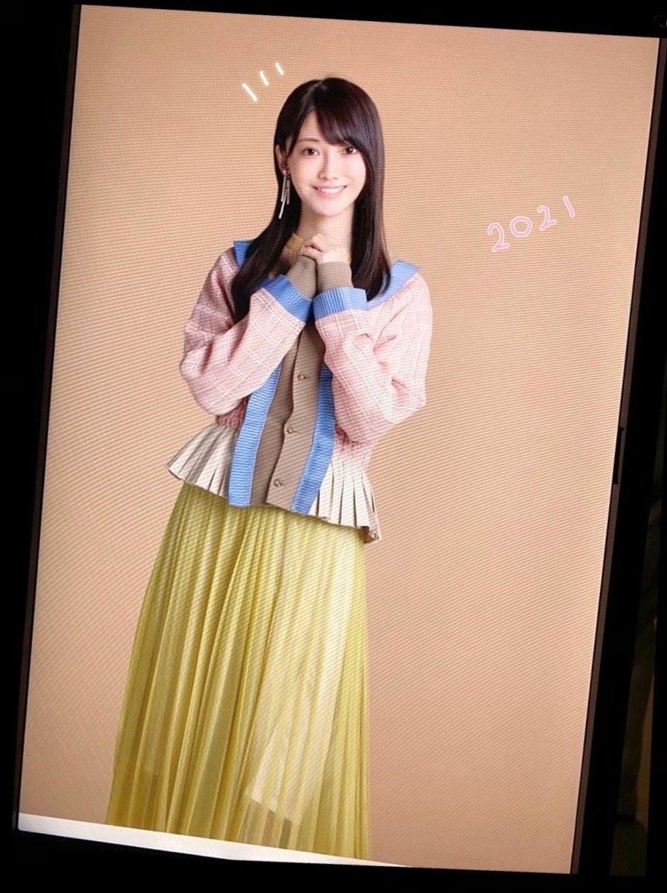
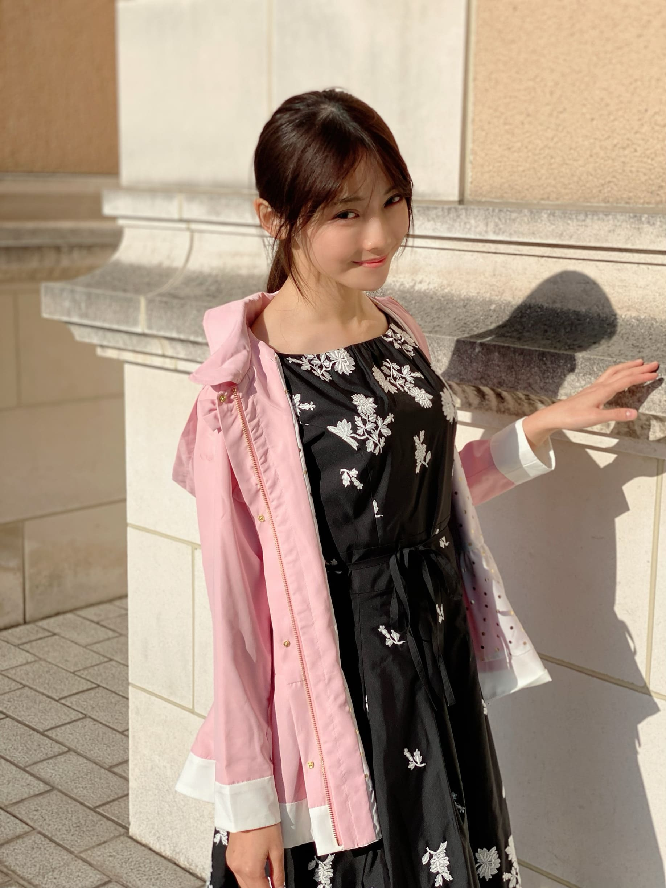
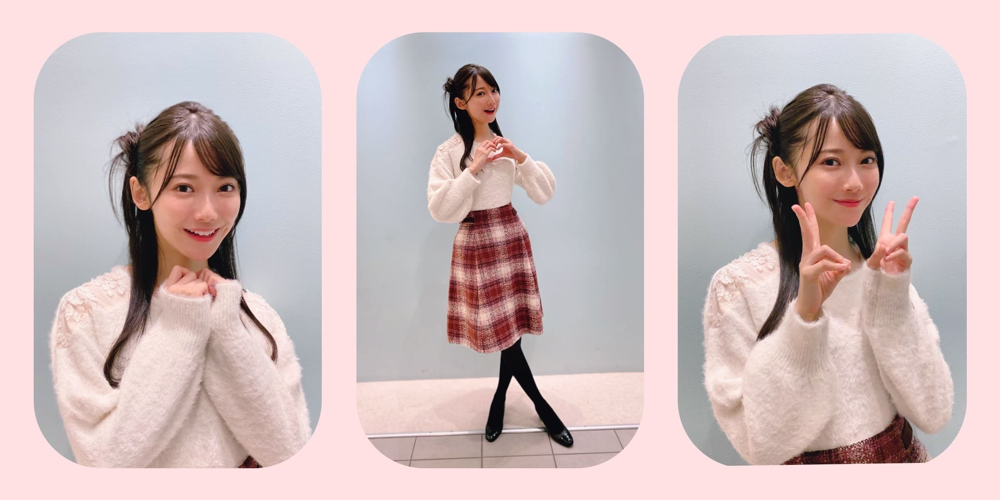
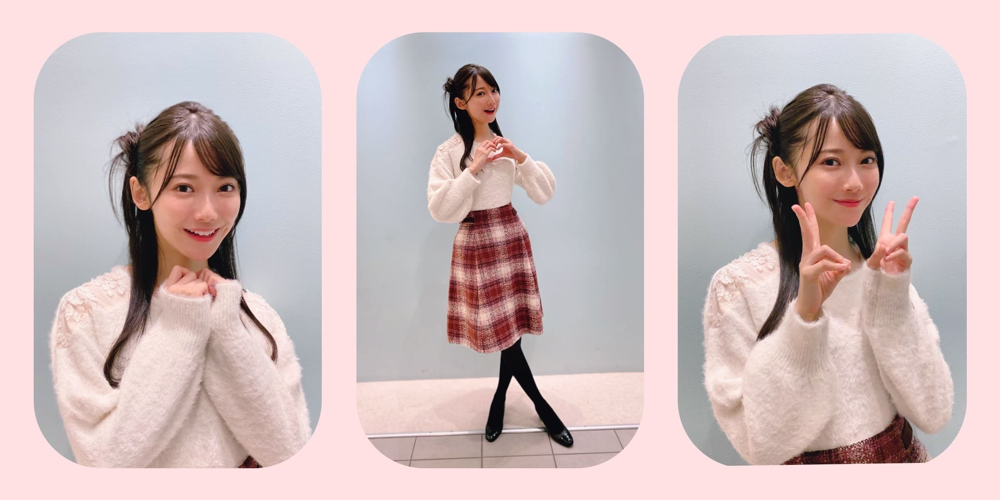
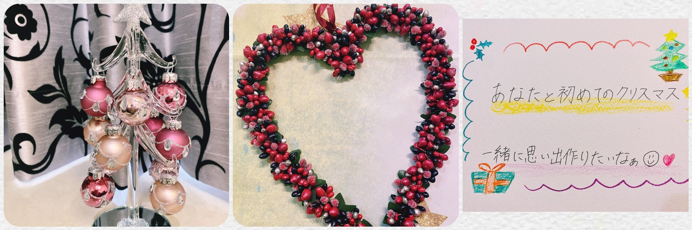

2020/1123Mon初めての4期生ライブ☺︎ 黒見明香(16)
連休最終日だね〜！今日も一日お疲れ様でした✩︎⡱
ココを見つけてくださり ありがとうございます♪
乃木坂46 新４期生の黒見明香です。
すこーしだけ自己紹介させてください☺︎
♪:*:･･:*:･･:*:･･:*:･･:*:･･:*:･♪:*:･･:*:･･:*:･･:*:･･:*:･･:*:･♪
黒見 明香（くろみ はるか）
2004年1月19日生まれ 16才
香港生まれ・東京都出身です
あだ名： くろみん・黒見ちゃん
3の倍数9・6・3(くろみ)
と覚えてもらえたら嬉しいです♪
＊
↓頂いたコメントから
◎また黒歴史コーナー復活させてください笑
未だに思い出すとドキドキ動悸が早くなってしまうのが...
乃木坂46時間TVでの「4期生打ち合わせ(オンライン)」で
私のマイクが入っていないことに全く気付かず、
「あの・・・あ、（喋りだし被っちゃった^^;;) お先にどうぞー！」
「私もぜひやってみたいな〜！」「それ良いねー」
などと独り言で、口をパクパクとしながら、
ニコニコ一人でボケ倒していました・・・( ´_ゝ`)
しばらく経って...スタッフさんに、
「えー、クロミさん？音声入っていませんよー。
マイクオンにしてくださいねー」と全体にお話があって、
ざわーーーっっ...て鳥肌がたって冷や汗が流れました・・Σ（ﾟдﾟll）
そんな日も・・・あるよね！？汗
♪:*:･･:*:･･:*:･･:*:･･:*:･･:*:･♪:*:･･:*:･･:*:･･:*:･･:*:･･:*:･♪

-:-:୨୧:-:- リクエスト頂いた、ハーフアップ編み込みしてみたよ〜☺︎いろいろな髪型チャレンジ中だよー♪
【 乃木坂46 4期生ライブ2020 発売開始✩︎⡱ 】
みんな身長も、グングン伸びてスタイルもカッコ良くて✨
⚫︎今回のシングルは新4期生として初だよね？
♪:*:･･:*:･･:*:･･:*:･･:*:･･:*:･♪:*:･･:*:･･:*:･･:*:･･:*:･･:*:･♪

-:-:୨୧:-:-リクエスト頂いた髪型、その② ポニテにまとめてみたけど、眩しくて秋の日差しに負けちゃいました\(//∇//)\
♪:*:･･:*:･･:*:･･:*:･･:*:･･:*:･♪:*:･･:*:･･:*:･･:*:･･:*:･･:*:･♪

-:-:୨୧:-:- 気が早いけれど、ちょこっとだけクリスマス風に飾って見たよ〜✨
⚫︎ハロウィーンがすぎると街はもうクリスマス一色......いやクリスマス三色ですね。ファンタスティック三色パン（笑）
♪:*:･･:*:･･:*:･･:*:･･:*:･･:*:･♪:*:･･:*:･･:*:･･:*:･･:*:･･:*:･♪
ブログやお手紙で、たくさんのコメントや感想送って下さり
本当にありがとうございます✩︎⡱
今回、初めてのコメントですー！というあなたも、
この間の話の続きだよー！というあなたも、
大切な時間を使ってお話しして下さり
本当にありがとうございます✨
あなたに出逢えた奇跡に、感謝しながら、
大事に、一つずつ全部読ませて頂いています((〃ω〃))
皆さんのことを知ることが出来る、
私の１日の中で『１番幸せな時間』です♩
直接お話しできる時が、 待ち遠しいです✩︎⡱
＊
寒い日が続いて、仕事や勉強が忙しかったり、
なんだか体調イマイチだよー、疲れちゃったよーって方も
本当に、お疲れ様でした✩︎⡱
きっと心も、身体も、しんどい時もあるかと思います。。
どうぞ、皆さんが 少しでも
ひとときリラックスできますように...✩︎⡱
と願っています(*´-`)
初めて会える日を、楽しみに待っています♪
＊
明日は「一緒にいると落ち着くぅ」と言ってくれる
◯取っていましたよー！取っていますよー\(//∇//)\笑
だって好きなんだもん。。
⚫︎握手会でこんな服着ようかな〜とかって考えていますか？
◯ありがとうございます！Don't think, Feel！ですね☺︎
♬ *。♩*。♬
⚫︎黒見ちゃん！って一言で言うとどんな人？
◯一言？うーん「明るいへっぽこ」かな(*´-`)？
⚫︎乃木坂の制服と歌衣装で着てみたいものを、それぞれいくつまででも構いません。
◯すごくたくさんあって、きっと皆んなと同じで思い入れも多いので、
♬ *。♩*。♬
＜ゲームコーナー✨＞
⚫︎プロスピの選択契約書は自分の使いたい選手をゲットするのもいいと思うよ！
◯そうだね！参考にして考えてみるね！
⚫︎ くろみんはプロスピseries2移行まで契約書貯めてたの？
◯まだ開封してないよ！楽しみだな〜☺︎
⚫︎ プロスピリーグランク何？
◯今、リーグランクは7だよ！
ランク上がりたいなぁー！なんか上がるコツとかあるのかな？
⚫︎ プロスピ、くろみんもいい選手が獲得出来ますように。
◯ありがとう！あなたも良い選手がでますように！
⚫︎ 黒見ちゃんはプロスピのオーダー守備と打撃だったらどっちを重視する？
◯あなたは守備なんだね！
難しいけど、私は打撃を重視するかなぁ！
みんなはどっち？
⚫︎ 黒見ちゃんはプロスピのミキサーどんどんやる派？貯める派？
◯ためてまとめて引くことが多いよ！
⚫︎ 乃木フェスでくろみんのカード当てたいのに全然当たらないよー！
◯当たって欲しいな！あなたのところに私のカードが出ますように☺︎
⚫︎ 乃木フェスでくろみんのSSR出ましたー！ananって書いてるカードです！
私はゲーム自体はよわよわなのですが、くろみんのカードGETできてとても嬉しいです！
◯おめでとう！！私も嬉しいな☺︎
⚫︎ 乃木フェス、特攻を殆ど持ってないから中々厳しい戦いになりそうだけど、何とか抽選券内には入りたいなーと思ってます。
◯乃木フェス3周年を支えてくれたあなたまずは3周年本当にありがとう！
頑張ってくれてるのを見るとすごく嬉しくなるよ！抽選券内入ってくれることを心から願ってるよ！
⚫︎ 乃木フェスでくろみん見れて幸せやった！
◯ゲーム内でも私を見て少しでも、幸せになってくれたら嬉しいな☺︎
⚫︎ 実際に神宮球場でプロ野球や大学野球見たことありますか？
1回だけ見たことあるよ！ホームランボールいつかとってみたいなぁ☺︎
⚫︎ 少し前のパ・リーグTVのサムネにDon'Think.Feelって書いてあったよ！それはホームランの動画なんだけどほんとにそんな感じのホームランだったよ...
◯その映像見たよ！サムネが気になってついつい押しちゃったよ！ホームラン凄かったよね！
♬ *。♩*。♬
・お怪我された方は（どうぞお大事にです><）
・会社の人と乃木坂を通じて仲良くなれたよーというエピソード（嬉しいです☺︎）
・乃木フェス黒見レーン頑張ってるよー！（ありがとう〜♡）
ココを見つけてくださり ありがとうございます♪
乃木坂46 新４期生の黒見明香です。
すこーしだけ自己紹介させてください☺︎
♪:*:･･:*:･･:*:･･:*:･･:*:･･:*:･♪:*:･･:*:･･:*:･･:*:･･:*:･･:*:･♪
黒見 明香（くろみ はるか）
2004年1月19日生まれ 16才
香港生まれ・東京都出身です
あだ名： くろみん・黒見ちゃん
3の倍数9・6・3(くろみ)
と覚えてもらえたら嬉しいです♪
＊
↓頂いたコメントから
◎また黒歴史コーナー復活させてください笑
今年何やらかしたかなぁ、と振り返っていて、
未だに思い出すとドキドキ動悸が早くなってしまうのが...
乃木坂46時間TVでの「4期生打ち合わせ(オンライン)」で
私のマイクが入っていないことに全く気付かず、
「あの・・・あ、（喋りだし被っちゃった^^;;) お先にどうぞー！」
「私もぜひやってみたいな〜！」「それ良いねー」
などと独り言で、口をパクパクとしながら、
ニコニコ一人でボケ倒していました・・・( ´_ゝ`)
しばらく経って...スタッフさんに、
「えー、クロミさん？音声入っていませんよー。
マイクオンにしてくださいねー」と全体にお話があって、
ざわーーーっっ...て鳥肌がたって冷や汗が流れました・・Σ（ﾟдﾟll）
そんな日も・・・あるよね！？汗
♪:*:･･:*:･･:*:･･:*:･･:*:･･:*:･♪:*:･･:*:･･:*:･･:*:･･:*:･･:*:･♪

-:-:୨୧:-:- リクエスト頂いた、ハーフアップ編み込みしてみたよ〜☺︎いろいろな髪型チャレンジ中だよー♪
【 乃木坂46 4期生ライブ2020 発売開始✩︎⡱ 】
ついに視聴チケットの発売が始まりましたー (*ˊᵕˋ*)੭
16人で力をあわせて、皆さんに"とっておきの楽しい時間✨"を
お届けできるよう、笑顔や幸せをお届けできるよう、
精一杯頑張ります♡ ぜひ楽しみにしてて下さいねー♪
＊
アフター配信では『アフターパジャマトーク』も予定しています〜✨
更に、みんなでセレクトした楽曲も披露するよー！
＊
⚫︎くろみんにとって4期生のメンバーはどんな存在ですか？15人分全員教えて欲しいです。
ライブまで今日合わせて残り３回！
大好きな４期生のこと、5人ずつ書かせてくださいね♪
大好きな４期生のこと、5人ずつ書かせてくださいね♪
◎遠藤さくらちゃん♡
小さなことにも喜びを発見していたり、心もまっすぐなさくちゃん。
体の使い方や魅せ方も美しくて、努力を続けている姿を尊敬しています。
◎賀喜遥香ちゃん♡
責任感が強くてかっこいいところと、繊細で優しくて女の子らしいところと、両方がすごく魅力的なかっきー。
間違えてしまった時にも、気づいて優しく教えてくれるあたたかさが大好きです。
◎掛橋沙耶香ちゃん♡
可愛いとカッコ良いの両面を持っていて、気さくにお話してくれる憧れのお姉さん。
ギターを弾いている姿も歌声も大好きです✨
＊
⚫︎ のぎおびで、くろみんにプレゼントとお手紙をもらったと、とても嬉しそうに話していました!
◯お手紙喜んでくれたのもすごく嬉しかったです〜((〃ω〃))
◎金川紗耶ちゃん♡
振り覚えも早くて、ダンスが映える美しいシルエットに見惚れてしまうやんちゃん。
天然で、内面も可愛らしいところも大好きです☺︎
◎北川悠理ちゃん♡
真っ直ぐで、声も可愛くて、ゆりちゃんにしか出来ないことが沢山あっていつも尊敬しています。ずっと変わらずお話してくれるのが嬉しくて心強いお姉さんです♬
♬ *。♩*。♬
⚫︎4期生あるあるあったら教えて欲しいな？
私がどんどん小ちゃくなってるように感じてるこの頃...\(//∇//)\笑
わたしにも成長期来るかなー！？
♬ *。♩*。♬
⚫︎4期生ライブ。「公約」、めっちゃ嬉しいです！
⚫︎公約は、やっぱりあのポーズ？
と思わせて「ヌンチャクをマイクにして歌うね！」と、想像の斜め上をゆくくろみんであった。（振りじゃないよ笑）
ヌンチャクマイク・・・ぜひいつか歌ってみたいですー(*´-`)
闘うアイドル...笑
ここをみてくれているあなたへの「公約」✨
ライブ直前会にこっそり書いちゃうので、待ってて下さいね☺︎
♬ *。♩*。♬
＜公演情報＞
乃木坂46 4期生ライブ 2020
【日程・時間】
2020年12月6日(日)
開場(配信開始) 16:00 ／ 開演(ライブ開始) 17:00 ／ 終演(ライブ終了) 19:00予定
2020年12月6日(日)
開場(配信開始) 16:00 ／ 開演(ライブ開始) 17:00 ／ 終演(ライブ終了) 19:00予定
♪:*:･･:*:･･:*:･･:*:･･:*:･･:*:･♪:*:･･:*:･･:*:･･:*:･･:*:･･:*:･♪

-:-:୨୧:-:- 2021年カレンダーのオフショットの一枚〜☺︎ 今晩23時までだよー！！

-:-:୨୧:-:- 2021年カレンダーのオフショットの一枚〜☺︎ 今晩23時までだよー！！
【 2021年カレンダー♡ 】
⚫︎くろみんの個別卓上カレンダー注文したよ？楽しみ～！
⚫︎くろみんの個別卓上カレンダー注文したよ？楽しみ～！
ありがとうございます((〃ω〃))
来年一緒に過ごせるの嬉しいなぁ〜✨
壁掛けカレンダーA・Bと
メンバー別の卓上カレンダーは・・・残りあと数時間><
＊
みんな、撮影頑張ってたので、
初めてのカレンダー✨
ぜひ、あなたの近くに置いてもらえたら嬉しいです (*ˊᵕˋ*)੭
＊
⚫︎今回のシングルは新4期生として初だよね？
もっともっと先輩方と距離縮めて仲良くなってほしいよ
本格的に参加させていただくのは初めてです。
いろいろとついていくのに必死だったり、
日々勉強することいっぱいですが、
ぜひ、乃木坂を応援してくださる皆さんに
愛していただける作品になるよう・・・
頑張っていますよーヾ(･ω･*)o
詳細待っててくださいね✨
やっぱり、全力投球ですー！☺︎笑
♪:*:･･:*:･･:*:･･:*:･･:*:･･:*:･♪:*:･･:*:･･:*:･･:*:･･:*:･･:*:･♪

-:-:୨୧:-:-リクエスト頂いた髪型、その② ポニテにまとめてみたけど、眩しくて秋の日差しに負けちゃいました\(//∇//)\
⚫︎黒見ちゃんのポニテの写真も見たいなぁー！ ぜひお願いします！
まとめてお散歩行ってみたよ〜 (*ˊᵕˋ*)੭
ほんとは春コートで、なおかつ密かに中学生から使ってるコート...汗
ショート丈になっても大丈夫そうかな？って着てみたけれど、
ちょっと子どもすぎちゃったかも！？笑
♪:*:･･:*:･･:*:･･:*:･･:*:･･:*:･♪:*:･･:*:･･:*:･･:*:･･:*:･･:*:･♪

-:-:୨୧:-:- ヘアスタイルその③✨冬っぽいまとめ髪してみたよ〜☺︎

-:-:୨୧:-:- ヘアスタイルその③✨冬っぽいまとめ髪してみたよ〜☺︎
⚫︎Wピースって指が4本立ってるよね。４期生のくろみちゃんにピッタリじゃん笑！
本当だー！ちょうど"4期生"ですね。
そしたら、ついカメラを向けられるとしてしまう
ワンパターンのWピースも
自信を持って？使っていきますね！
コメント、教えてくれてありがとうございますヾ(･ω･*)o
♪:*:･･:*:･･:*:･･:*:･･:*:･･:*:･♪:*:･･:*:･･:*:･･:*:･･:*:･･:*:･♪

-:-:୨୧:-:- 気が早いけれど、ちょこっとだけクリスマス風に飾って見たよ〜✨
⚫︎ハロウィーンがすぎると街はもうクリスマス一色......いやクリスマス三色ですね。ファンタスティック三色パン（笑）
上手いっ！笑 街がなんだか急にクリスマス、冬色になってて少し焦っちゃいますね(*´-`)
でも、なんだかキラキラして「12月だぁ」ってワクワクしちゃうのは私だけかなぁ？
今年は、乃木坂を一緒に歩いてくださる
あなたと出逢えて初めてのクリスマスです✩︎⡱
初めて会える日まで、まだ少し・・・
でも、とびっきりの想い出、いっぱい幸せつくれるよう
ぜひ、また見にきてくれたら嬉しいな (*ˊᵕˋ*)੭
⚫︎幼少期など黒見さんはサンタさんにどんなプレゼントのお願いをしていましたか。
⚫︎今年のクリスマスは何をお願いしますか？
小さい時は、「願いが叶うステッキ(自分で描いた図解入り)」など
⚫︎今年のクリスマスは何をお願いしますか？
小さい時は、「願いが叶うステッキ(自分で描いた図解入り)」など
存在しないものをお願いしていました\(//∇//)\
↓サンタさん珍回答エピソード！？☺︎笑
＊
今年は、向井葉月さん♡と約束した、
ゲームでフレンドになるために、、、
PSが欲しいなぁ..(お小遣い貯めてるの〜><）
と願っているのだけど、サンタさん厳しそうです☺︎笑
みんなは、何をお願いしてたのかなぁ・・・？
♪:*:･･:*:･･:*:･･:*:･･:*:･･:*:･♪:*:･･:*:･･:*:･･:*:･･:*:･･:*:･♪
ブログやお手紙で、たくさんのコメントや感想送って下さり
本当にありがとうございます✩︎⡱
今回、初めてのコメントですー！というあなたも、
この間の話の続きだよー！というあなたも、
大切な時間を使ってお話しして下さり
本当にありがとうございます✨
あなたに出逢えた奇跡に、感謝しながら、
大事に、一つずつ全部読ませて頂いています((〃ω〃))
皆さんのことを知ることが出来る、
私の１日の中で『１番幸せな時間』です♩
直接お話しできる時が、 待ち遠しいです✩︎⡱
＊
寒い日が続いて、仕事や勉強が忙しかったり、
なんだか体調イマイチだよー、疲れちゃったよーって方も
本当に、お疲れ様でした✩︎⡱
きっと心も、身体も、しんどい時もあるかと思います。。
どうぞ、皆さんが 少しでも
ひとときリラックスできますように...✩︎⡱
と願っています(*´-`)
初めて会える日を、楽しみに待っています♪
＊
明日は「一緒にいると落ち着くぅ」と言ってくれる
優しいお姉さん 璃果ちゃんですよ〜♬
読んでくださり、本当にありがとうございます☺︎
次回も、会えたら嬉しいなぁ✨
またねヾ(･ω･*)
くろみはるか☺︎
☆ 明日のあなたのラッキーナンバー：❼ と ❷
読んでくださり、本当にありがとうございます☺︎
次回も、会えたら嬉しいなぁ✨
またねヾ(･ω･*)
くろみはるか☺︎
☆ 明日のあなたのラッキーナンバー：❼ と ❷
（↑本日のラッキーナンバーだと残り時間が少ないよーとのコメント頂いて、次の日の占い方も勉強しましたー (*ˊᵕˋ*)੭ もしよかったら、参考にしてみてね✨）
♪:*:･･:*:･･:*:･･:*:･･:*:･･:*:･♪:*:･･:*:･･:*:･･:*:･･:*:･･:*:･♪
・
・
・
＜ちょこっとアンコール♬笑＞
〜クロミ・ル・フィーユ〜
（クロ見るFeel YOU☺︎）
↑コメントありがとうー！使ってみたよー♪
♬ *。♩*。♬
ココからおまけ、すっごく長いよ〜笑
楽屋裏でお喋りしてるような感じなので、
気が向いた時にでも〜↓☺︎
♬ *。♩*。♬
♪:*:･･:*:･･:*:･･:*:･･:*:･･:*:･♪:*:･･:*:･･:*:･･:*:･･:*:･･:*:･♪
・
・
・
＜ちょこっとアンコール♬笑＞
〜クロミ・ル・フィーユ〜
（クロ見るFeel YOU☺︎）
↑コメントありがとうー！使ってみたよー♪
♬ *。♩*。♬
ココからおまけ、すっごく長いよ〜笑
楽屋裏でお喋りしてるような感じなので、
気が向いた時にでも〜↓☺︎
♬ *。♩*。♬
⚫︎乃木坂に入る前はメンバーのメール取ってた？
◯取っていましたよー！取っていますよー\(//∇//)\笑
だって好きなんだもん。。
⚫︎握手会でこんな服着ようかな〜とかって考えていますか？
◯考えてるよー！ウインドウショッピングしていても、
「この服、初めての握手会で着てみたいなー♬」って
つい想像しちゃったりするんだよ〜！
♬ *。♩*。♬
⚫︎3年前の秋から筋トレをしているのですが、
何か始めるときは、日付と、内容をざっくりとでも
書いておくと継続できるよ！
◯アドバイス教えてくれてありがとうヾ(･ω･*)o
書いておくと継続できるよ！
◯アドバイス教えてくれてありがとうヾ(･ω･*)o
ブログやSHOWROOMにコメント下さった、
あなたのお名前をノートに書いていたり、
最近は、基礎代謝や骨格筋率をつけているよー笑
続くかな？頑張ります！
4期生ライブに向けて体力つけないいとだよね (*ˊᵕˋ*)੭
♬ *。♩*。♬
♬ *。♩*。♬
⚫︎ヌンチャクの練習用に良い動画ってありますか？どうやって練習始めたら良いか分からない...
◯皆さん上手でむずかしいよねー！
まずは自分の好きな技を見つけて「これ出来るようになりたいー✨」と思えるのを、ゆっくり(だったり鏡だったり)再生するアプリで見れるといいなぁ。。。
説明下手でごめんね><
テレビ見ながらや、歌いながらなど、くるくるしていると
縄跳びみたく、急にコツを掴めるようになるらしいです。
私も修行中だよー！一緒に頑張ろうね (*ˊᵕˋ*)੭
♬ *。♩*。♬
⚫︎好きなおでんの具は何ですか？
⚫︎好きなおでんの具は何ですか？
◯玉子と大根が大好きです(*´-`)
もち巾着も好きですー！お餅が出て溶けちゃったりしますよね笑
冬のおでん美味しいですよね〜
もち巾着も好きですー！お餅が出て溶けちゃったりしますよね笑
冬のおでん美味しいですよね〜
＊
⚫︎バスラBD.DVDが出るんだね。くろみんが挨拶する時にけっこう頑張って叫んだけど入ってるかな？笑
緊張で震えながら立ってる時、声が聞こえましたー！
真夏さん♡が教えてくださった通り、乃木坂のファンの皆さんは本当に優しくて、すごくすごく勇気をいただきました (*ˊᵕˋ*)੭ いつもありがとうございます✨
♬ *。♩*。♬
⚫︎BOØWY を聴かれて暫く経つと思いますが、お気に入りの曲は、見つかりましたか？笑
LAST GIGSがライブアルバムだったこともあり、MCもとっても印象的で『センキューぅ』という言い方を真似していたら、、、工事中のスタッフの皆様が爆笑していらっしゃいました\(//∇//)\笑
⚫︎BOØWY を聴かれて暫く経つと思いますが、お気に入りの曲は、見つかりましたか？笑
LAST GIGSがライブアルバムだったこともあり、MCもとっても印象的で『センキューぅ』という言い方を真似していたら、、、工事中のスタッフの皆様が爆笑していらっしゃいました\(//∇//)\笑
＊
⚫︎試行錯誤で悩む時は「考えない」のもやり方の1つだよ
⚫︎試行錯誤で悩む時は「考えない」のもやり方の1つだよ
◯ありがとうございます！Don't think, Feel！ですね☺︎
＊
⚫︎インスタグラムで黒見ファンクラブ開始したいです、いいですか？？(*^^*)
すごいねー！嬉しいなぁ、ありがとう (*ˊᵕˋ*)੭ ✨
♬ *。♩*。♬
＜悩んでいるあなたに☺︎＞
⚫︎僕が心が沈んだ時に響く言葉があります。
"自分はいらないんじゃないかと思うことより、ここにいたいと思うことの方がずっと大変なんだ。疲れたり迷ったりするのも至極自然なことじゃないか"
"自分はいらないんじゃないかと思うことより、ここにいたいと思うことの方がずっと大変なんだ。疲れたり迷ったりするのも至極自然なことじゃないか"
⚫︎自転車は、「視線を前に向ける」「ふらついても漕ぎ続ける」のが大事と聞いて、何度も練習しました!今思うと、なんだか色々な事に通じそうです...
◯ステキなお話聞かせて下さってありとうございます。
いろいろ落ち込んじゃったり、悩んじゃったよー！て方も、何かの元気が出るきっかけになったら嬉しいなぁ。。。一緒に頑張ろうね (*ˊᵕˋ*)੭ ✨
♬ *。♩*。♬
⚫︎黒見ちゃん！って一言で言うとどんな人？
◯一言？うーん「明るいへっぽこ」かな(*´-`)？
♬ *。♩*。♬
⚫︎乃木坂の制服と歌衣装で着てみたいものを、それぞれいくつまででも構いません。
◯すごくたくさんあって、きっと皆んなと同じで思い入れも多いので、
ちょこっとだけ書かせてねヾ(･ω･*)o
制服は 走れ！Bicycleのブラウスや、ガールズルールのセーラー、命は美しい、帰り道は遠回りしたくなる、Sing Out!の制服・・・等がすごく印象に残っていて、大好きです。
どの制服も、その時着ていらっしゃった
先輩方のお姿思い浮かぶので、
自分が着てみたいは畏れ多くて、
なかなか想像つかなくて・・・
答えが遅くなってごめんね((〃ω〃))
＊
だいたいぜんぶ展も本当に感動しました✨
きっと皆んなとおんなじだよね？☺︎
（＊歌衣装は、また今度書かせてね！）
♬ *。♩*。♬
＜ゲームコーナー✨＞
⚫︎プロスピの選択契約書は自分の使いたい選手をゲットするのもいいと思うよ！
◯そうだね！参考にして考えてみるね！
⚫︎ くろみんはプロスピseries2移行まで契約書貯めてたの？
◯まだ開封してないよ！楽しみだな〜☺︎
⚫︎ プロスピリーグランク何？
◯今、リーグランクは7だよ！
ランク上がりたいなぁー！なんか上がるコツとかあるのかな？
⚫︎ プロスピ、くろみんもいい選手が獲得出来ますように。
◯ありがとう！あなたも良い選手がでますように！
⚫︎ 黒見ちゃんはプロスピのオーダー守備と打撃だったらどっちを重視する？
◯あなたは守備なんだね！
難しいけど、私は打撃を重視するかなぁ！
みんなはどっち？
⚫︎ 黒見ちゃんはプロスピのミキサーどんどんやる派？貯める派？
◯ためてまとめて引くことが多いよ！
⚫︎ 乃木フェスでくろみんのカード当てたいのに全然当たらないよー！
◯当たって欲しいな！あなたのところに私のカードが出ますように☺︎
⚫︎ 乃木フェスでくろみんのSSR出ましたー！ananって書いてるカードです！
私はゲーム自体はよわよわなのですが、くろみんのカードGETできてとても嬉しいです！
◯おめでとう！！私も嬉しいな☺︎
⚫︎ 乃木フェス、特攻を殆ど持ってないから中々厳しい戦いになりそうだけど、何とか抽選券内には入りたいなーと思ってます。
◯乃木フェス3周年を支えてくれたあなたまずは3周年本当にありがとう！
頑張ってくれてるのを見るとすごく嬉しくなるよ！抽選券内入ってくれることを心から願ってるよ！
⚫︎ 乃木フェスでくろみん見れて幸せやった！
◯ゲーム内でも私を見て少しでも、幸せになってくれたら嬉しいな☺︎
⚫︎ 実際に神宮球場でプロ野球や大学野球見たことありますか？
1回だけ見たことあるよ！ホームランボールいつかとってみたいなぁ☺︎
⚫︎ 少し前のパ・リーグTVのサムネにDon'Think.Feelって書いてあったよ！それはホームランの動画なんだけどほんとにそんな感じのホームランだったよ...
◯その映像見たよ！サムネが気になってついつい押しちゃったよ！ホームラン凄かったよね！
♬ *。♩*。♬
◎氣志團さん、Creepy Nutsさん、UVERworldさん、PUFFYさん、one directionさん、サザンオールスターズさん、爆風スランプさん、など今回もステキないま聴きたくなる曲教えてくれてありがとうー！
◎野球のテストや最後のマラソンのお話、試験だよー！物理ピーンチも(私も！一緒にがんばろー!!）課題やレポート書くの頑張るよーというあなたも、自炊頑張ってるよー、乃木フェスでカードGETしたよー！という嬉しい報告も、ありがとう！一緒に頑張れたら嬉しいなー☺︎
◎野球のテストや最後のマラソンのお話、試験だよー！物理ピーンチも(私も！一緒にがんばろー!!）課題やレポート書くの頑張るよーというあなたも、自炊頑張ってるよー、乃木フェスでカードGETしたよー！という嬉しい報告も、ありがとう！一緒に頑張れたら嬉しいなー☺︎
◎野生動物のお話、SDガンダム三国伝、サモハンキンポーさん、映画魔女見習いを探してのこと、爪楊枝ロボ、勿忘草の素敵な名前、電車通学のお話も、ピザの日のこと、ジーパンの花言葉笑、ニコラ・テスラさんの3・6・9のお話、ブルース・リーさん似てる方のエピソード、ミリオンラブのお話、四月は君の嘘のこと、飼育係のお話、宇宙飛行士のお話、天体のランデブーのこと、人狼ゲームのこと、キョウカイのこと、沢山のコメントありがとうございます。一つ一つ大切に、嬉しく読ませて頂いたよ♬
・お怪我された方は（どうぞお大事にです><）
・会社の人と乃木坂を通じて仲良くなれたよーというエピソード（嬉しいです☺︎）
・乃木フェス黒見レーン頑張ってるよー！（ありがとう〜♡）
・留学生の子とお話しできたよーていう嬉しい後日談もありがとうー！
保湿グッズ、また紹介させてね✩︎⡱
♬ *。♩*。♬
そして、、、あなたのお誕生日、教えてくれてありがとう〜☺︎
お誕生日を迎えるあなたへ・・
✨HAPPY BIRTHDAY✨
どうぞ素敵な一年になりますよう✩︎⡱
♪:*:･･:*:･･:*:･･:*:･･:*:･･:*:･♪:*:･･:*:･･:*:･･:*:･･:*:･･:*:･♪
ここまで読んでくださったアナタ、ほんとうにありがとう♡
またねヾ(･ω･*)
お誕生日を迎えるあなたへ・・
✨HAPPY BIRTHDAY✨
どうぞ素敵な一年になりますよう✩︎⡱
♪:*:･･:*:･･:*:･･:*:･･:*:･･:*:･♪:*:･･:*:･･:*:･･:*:･･:*:･･:*:･♪
ここまで読んでくださったアナタ、ほんとうにありがとう♡
またねヾ(･ω･*)
2020/11/23 18:06

PROFILE
新4期生リレー
202104
| SUN | MON | TUE | WED | THU | FRI | SAT |
|---|---|---|---|---|---|---|
| 1 | 2 | 3 | ||||
| 4 | 5 | 6 | 7 | 8 | 9 | 10 |
| 11 | 12 | 13 | 14 | 15 | 16 | 17 |
| 18 | 19 | 20 | 21 | 22 | 23 | 24 |
| 25 | 26 | 27 | 28 | 29 | 30 | |

コメント(260)
ゆっくり読むね︎︎☺︎︎︎☺︎
4期ライブ楽しみだね〜
あと〇〇日〜カウントダウンだね〜
くろみんこんばんは！
ブログ更新ありがとう♪
今日は休日出勤してきたよ〜。うち今年末にかけて忙しくなってきてねー、毎日残業しておりますよ(^_^;)
身体壊さないようにしっかりとしなきゃなあ。
このご時世なかなか行きたいところにも行けないし、あまりストレス発散出来ないてのが悩みでもあるんだあ。
くろみんは辛い時どうやって乗り越えていってるのかな？
とにかくガムシャラに今は頑張っておる状態です( ；∀；)
明日もまた忙しいけど頑張ってくるね！
くろみんも4期生ライブなどがんばんビーでね
めちゃくちゃ久しぶりにコメントします！笑
いつも長文でブログ書いてて凄いな〜って思ってます！楽しく読ませてもらってます！
4期生ライブ本当に楽しみです！
ちなみに前回、横アリで開催された4期生ライブに参加したのですが、そこから16人になってパワーアップした4期生ライブをみれるのがとても嬉しいです！
がんばってね！応援してるよ！
本当にクリスマスの飾りが増えてきましたね
今年はどこで過ごすのかな？
乃木坂メンバーとして迎える初
きっと今までよりさらにさらに輝いて見えると思いますよ。
楽しみですね
こんばんは。
今日も一日お疲れ様～
ブログ更新ありがとう!!
…なんて、可愛い写真(*･ω･)
ハーフアップも、ポニテも、まとめ髪も最高だね!
Wピースも好きだけど…
カレンダーのオフショットみたいに、くろみんの「顔の前で手を握っているポーズ」が、自分は大好きです!!
ライブも、もうすぐ！
「のぎおび」のスペシャルウィークを楽しみにしています。
ペアの配信ってくろみんは初めてかな？
くろみんが「誰と」ペアなのかが、とても気になってます、ワクワク(笑)
乃木フェス楽しんでいます。
「乃木恋」も明日から彼氏イベントですね。
彼氏になれたら嬉しいな～…なんとか頑張ってみますねo(｀^´*)
では、またﾉｼ
#227
ちなみに最近の目標は目指せシャトルラン８０回です！（←私も運動できない人です）
実は明後日から新しいお仕事が始まるので、更新後すぐくろみんのブログを読むことは今日最後かもしれない(´；ω；｀)
ああ、マイクオフして気づかないことよくあるよね(｡>﹏<｡)
でも結局最後は自分が恥ずかしいだけだよね（笑）
くろみんの黒歴史エピソードはぜひ、今後乃木中にも活かしてほしいよ＼(^o^)／♪
うわー、ハーフアップよりこの瞳の綺麗さ(｡>﹏<｡)
クロミのヒトミはキレイ（←言いたかっただけ（笑））
そっか、今回もライブの後にアフター配信あるか？
うわーー、すごく楽しみ＼(^o^)／
これはやっぱり配信ライブの良いところだよね(*´ω｀*)
おー、4期生全員への愛のことば来た＼(^o^)／さすが
本人たちに届けるように(｡>﹏<｡)
4期生は全員仲良いと知ってるけど、
やっぱりくろみんと4期生の絡みはまだまだあまり映像で見たこと無いよね
そういえば、今週と来週ののぎおびは4期生2人ずつ登場するらしいよね
くろみんと一緒の回は楽しみ＼(^o^)／やっぱり一人で出せない魅力を期待するよ♪
確かに4期生は意外と皆慎重高いよね
くろみんは今何センチ？
いつもキレイなワンピースを着こなして、身長高く見えるけど
4期生ライブは本当に楽しみ(｡>﹏<｡)リハも頑張って(/･ω･)/
うわーーカレンダーのオフショット可愛い
ちょっと大人っぽいよね(*´ω｀*)♡
うわーーー、次のポニーテール顔眩しいショットもめちゃ可愛いよ(｡>﹏<｡)♡♡♡
やっぱりピンク色は滅多に見ないなあ
あと、この豚ピンクと黒は意外とめちゃマッチュするよね(ﾟдﾟ)！♡♡♡
うわーーー、次の写真もまた可愛いよ(｡>﹏<｡)
冬服はなぜか彼女感出るな(｡>﹏<｡)
あとやっぱりくろみんのちゃんと靴まで写ってる全身写真は大好きだよ＼(^o^)／♡♡♡
この髪型も初めて見た、すごく大人っぽいなあ(ﾟдﾟ)！♡♡♡
なんか写真に対して「うわー」や「可愛い」しか連呼できなくてごめんね(｡>﹏<｡)
語彙力は・・・（笑）
はづきちゃんと一緒にゲームする姿を見たいなあ(*´ω｀*)♪
そういえば、今までラッキーナンバーを見たけど、
特にあまり深く考えなかったけど
今後は日常生活にラッキーナンバーに注目しようかな＼(^o^)／
・ただし誰のメールを取ったって教えない！（笑）
・うわーー、私のペンネームはくろみんにメモされるだけで嬉しいなあ！いつかラジオ番組でラジオネームが読まれたときに、くろみんがすごくだけ反応したら・・・と勝手に妄想している（笑）
・そういえば、せーらは先日「おはつちゃん」でテコンドーに挑戦したよね！ヌンチャクやテコンドー、4期生は武道アイドルになるよね＼(^o^)／（笑）くろみんも早く「おはつちゃん」に来てほしいよ(*´ω｀*)♡
・個人的にブランコのMV服は一番好きだから、ぜひいつか着る機会があれば見たいよ(*´ω｀*)
そういえば、前からずっと思ったけど、くろみんの先輩たちのあとに「♡」を付けることはすごく好きだよ(*´ω｀*)♡
これからも頑張って(/･ω･)/
後半についてあまりコメントしなかったけど、今日もちゃんと全部読んだよ～～( ･´ｰ･｀）
PS:【質問】
以前ブログに自分のミドルネームを教えたが、今はあまり触れないよね。
このネタは他の番組触れてもいいなの（ラジオとか）、それとも私たちの秘密にするの？(*´ω｀*)（ミドルネーム知ってる人はくろみんのファンの証拠みたいな（笑））
僕も今ワンダイレクションのリヴ・ホワイル・ウィアー・ヤングにはまっています。
今度聴いてみてください。
衣装のオレンジのスカート似合うなぁ。
ビビットなカラーも、着こなすなんて
さすが(*´-`)
二枚目のブログの写真もすごくイイ
いつかのライブでシングアウト踊る
黒見ちゃん見るのを楽しみにしてます
ではではまたね！
4期生の推しはまだいないのでくろみん推そうかと思ってます✴︎
すごいブログ気合入ってて毎回びっくりです‼️
体調に気をつけてお互い頑張ろうぜ！！
最高のパフォーマンス期待してます！
4期生ライブもあと少しだね。
やっとくろみんの輝いた姿を観れると思うととっても嬉しいです 直接応援できないけど、遠くから応援してます❕
4期生ライブに向けて、くろみんが好きな振り付けの曲を三曲教えてください！
今日は再来年の成人式の振袖を選んできました！！
一生に一度しかない20歳のお祝いのためにお母さんとじっくり選んできたよ〜！！
●黒見ちゃんはどんな色の振袖にするのかな？？
私は濃い緑にしたよ〜！！
●お母さんお父さんに感謝の気持ちを込めて何かプレゼントしたいな〜って考えてるんだ！もう少しで19歳、1年後には20歳になってるから考えてる時間がとっても楽しいんだ〜！
今は行けないけど、行けるようになったら弟たちも一緒に旅行に行きたいな〜って考えてるよ！
明日からのぎおびに4期生2人登場！って聞いていつかないつかな〜って楽しみです！
ブログも楽しみにしてるね！！！！
４期生ライブ本当に楽しみ！来週からののぎおびも楽しみ
頑張ってね！応援してるよ❕
【質問】ペンネーム変えたいと思ってるんだけど、変えても覚えてくれますか？
愛媛県在住 中３女子 音より
追伸：今日も一日お疲れ様！
黒見ちゃんの黒歴史を毎回読んでますが、黒歴史というより黒見ちゃんのほのぼの日記ですね。いつも読んでほっこりしてます。
4期生ライブ少しずつ近づいてきたね。ワクワクしてるよ！
写真ありがとう！毎回可愛さがパワーアップしてます。最初の写真、カレンダーの写真、ポニテの写真、全部美しく可愛い！
体調に気を付けて頑張ってね。いつも応援してます。
ことわざにもありますもんね？
可愛い子にはチェックを着させよってね♪
(゜o(
一般人も歩けば拳に当たる…
(゜o(
最近は年末にむけて仕事が忙しく
なってきて大変だけどがんばってるよー
4期生ライブ楽しみにしてるね！
プロスピのリーグランクあげるコツは
難しいけどコンボが大事かなーって思うよ！
コンボ上昇量で勝てることもあるから
意識してみてね！
自分はシリーズ2完全移行で契約書とみきさー
でかなり補強できたよ！
ライブのリハとかで大変だと思うけど
体調には気をつけてね！
４期生ライブ楽しみにしています！
くろみちゃんとゆみっきーの
ゆみくろコンビがなんかほんわかした
イメージがあって好きです！
音響とかすごくて感動したし、ものすごい泣いた(笑)
昔聴いてた曲で3B LAB.☆の一期一会とかプレゼントは良い曲だからもしよかったら聴いてみて！
先ほど、４期生ライブのチケット購入しました。
楽しみにしています。
ここ最近、寒く乾燥する季節となり、
鼻喉の粘膜も傷みがちなので、
体調崩さないように気をつけてくださいね。
応援しています。
今からもう13日後が楽しみ過ぎちゃってテンションの上がり方がエグイぜ、ポンポンポーン
4番目のか...光、ヒャーはもちろん、図書室とかも16人での世界初披露が拝めるんぢゃにゃーかとか期待に胸がハイパーインフレや〜
くろみんも中国武術の演武があんぢゃなーきゃとかも勝手に妄想して楽しんでおりますゆえ、盛り上がるライブよろ
黒見ちゃんのブログの書き方や文章が好きでいつも何回も読んじゃいます。
働けるようになったら黒見ちゃんのグッズ絶対買います！
握手会が開けるようになったら黒見ちゃんと握手したいです！
まずは4期生ライブ楽しみにしています。
ずっと応援してます。頑張って下さい。
ツイ画像見て ペン立て パーツを 頼んだよ 。。 最終日
カレンダー 本体は 大安とか わかる 卓上 先買ってたw..
くろみん は おとなかい？
ブログ更新ありがとうございます。
今日も丁寧にひとつひとつ読ませてもらいました。
今日は長かったね〜笑 大好きなブログです。
すごい余談なのですが、
黒見ちゃんのブログはあまりにも長いので、
こうしてお返事を書く時は、
iPadでブログを表示しながら、iPhoneでコメントを書いています。
黒見ちゃんのブログの「お返事」になるようにね。
黒歴史コーナー、本当に大好きです。
黒見ちゃんて、お話を伝えるのが上手だよね。
いつか乃木坂工事中でも、緊張せずに、バナナマンさんにお話してみてくださいね。きっと気に入ってもらえると思いますよ。
設楽さん、そういう黒歴史とか大好きだと思うので。
今回のブログは髪型のアレンジがすごく可愛い！
ポニテは子どもっぽいっていうかも知れないけど、
子どもっぽいことができるのも今のうちだから、良いと思うなぁ
冬っぽいまとめ髪がとっても好きです。可愛いね！
握手会で見てみたい服もいっぱいあるけど、
僕たち参加する方も、どんな服を着ようかな？とかあるんだよ。
握手会場でしか会えない友達もたーーくさん、日常では考えられないくらいの数がいるからね！たくさんの人に会うんだーそして大好きなメンバーにも会うんだーって思うとつい気合いが入ります。
モバメ、楽しみだね。早くとりたいです。
4期生ライブのお話とかさ、選抜のお話とか
やっぱりモバメで送られるものって特別じゃない？
黒見ちゃんと音楽のお話もまだまだしたいなぁ〜って思います。
今日のおススメソングは、Queenの「39」です。宇宙のお話、すごく素敵な曲だよ〜
4期生全員へのメッセージとか、あとでゆっくり読み返しますね。
また5日後、公約が楽しみだなーちゃんと見つけますね！
今日もありがとう！
また5日後に！
かがやき
黒見さんのお写真を見て顔が
ポカポカになります。
優しく愛を持って4期生の
方々を見ていらっしゃるの
が伝わってきます。
必ず黒見さんに同じように
返ってきますよ。
サンタさんが少し困るような
プレゼントを。
黒見さんらしくとっても
可愛らしいですね。
4期生ライブも近づいてきて
コンディショニングにも
お気をつけてください。
白湯を飲めば喉の調子も
整い体温も代謝も上がり
身体の中を温められて
良いですよ。
簡単に用意できますからね。
おすすめです。
沢山の愛を持ってライブを
見ていたら。
きっと黒見さんと
目が合いますよね。
ライブ当日。
目の前には沢山の人達が
必ず見えるはずです。
黒見さんならきっと見える
はずです。
ですから。
最高の笑顔を見せて
ください。
Don't think. feel.
この言葉を知っている黒見さん
ならきっと見えるはずです。
是非、4期生の皆さんに伝えて
欲しいなと思います。
眼をこらして。
耳を澄ませて。
五感を研ぎ澄ませる。
ほら。みんな。目の前には
沢山の人達が観に来てくれ
ているよ。沢山の歓声が
聴こえる。
笑顔で楽しんでいこう。
と。
I hope you will keep smiling forever:)
乃木坂46 4期生ライブ2020 視聴チケット発売されたね
さっそく買ったよ
アフター配信もセレクトした楽曲も楽しみにしてます！
前のブログの話なんだけど、俺も小さい頃は犬小屋によく入ってたんだそうだ。
更に、野犬の群れの中に入ってじゃれ遊んでたらしい。
母は背筋が凍ったそうな…
だからかな？よく吠えると言われる近所の犬が俺にはチラ見するぐらいで吠えない。
と言うか、動物全般からあまり警戒されないからすぐ仲良くなれる人。
くろみんも犬小屋に入ってたぐらいだから、色んな動物と仲良くなれる人かな？
全員での4期生ライブ決定おめでとう！
これは見なければ！
公約、楽しみだね～。
俺は師から習ったから見たことないんだけど、ヌンチャクの練習動画があるといいね。
なんと、サイリウムのヌンチャクが売られてるのを見付けたよ！
もうすぐ届くはずだから、しばしお待ちを。
ライトセーバーを使って剣舞やったら綺麗だろうね。
初めてコメントします｡
まずは4期生ライブ開催と、紅白出場おめでとう(*^ω^*)
年末に向けて忙しくなると思うけど、頑張ってくださいね♪
ブログにサザンオールスターズさんの名前があったので、僕からオススメの曲を紹介させてください｡
自分は名前の通りサザンオールスターズさんの大ファンです(*^ω^*)
もうすぐ冬なので、これからの季節にぴったりなオススメの曲があります♪
それはサザンオールスターズの桑田佳祐さんのソロ曲「白い恋人達」です｡
YouTubeでミュージックビデオ付き（Full ver.）で公開されているので、機会があったらぜひ聴いてみてください♪
YouTubeで「白い恋人達」と検索すれば出てきます♪
⭐︎質問⭐︎
サザンオールスターズさんの曲で好きな曲ってありますか？
答えてくれると嬉しいです(^^)
コメント読んでくれてありがとう♪
体調に気をつけてお過ごしください。
またコメントします｡
サザンオールスターズのTシャツ（ちぃ君）
くろみちゃんにお団子して欲しいです！！❤︎もうすでにしていたらごめんなさい
くろみん今日も１日お疲れ様です。
くろみん今日も可愛いです。
今日はお仕事お休みでした。
今日はゆっくりと休むことが出来ました。
明日からは三連勤頑張ります。
最近は寒くなって来てるので体調を崩さないように気を付けてください。
自分も体調を崩さないように気を付けます。
これからもお仕事頑張って下さい。
自分もお仕事頑張ります。
これからのブログを楽しみにしてます。
コメントする